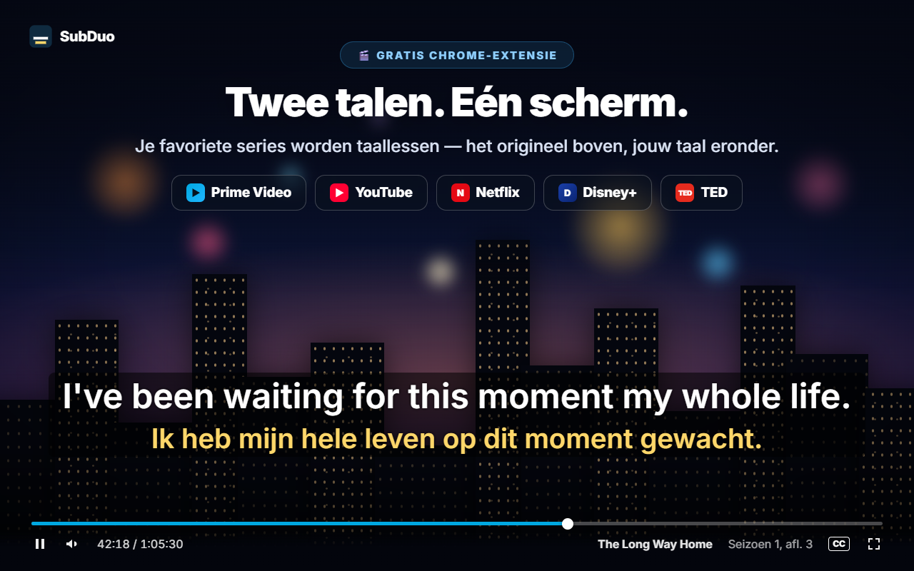
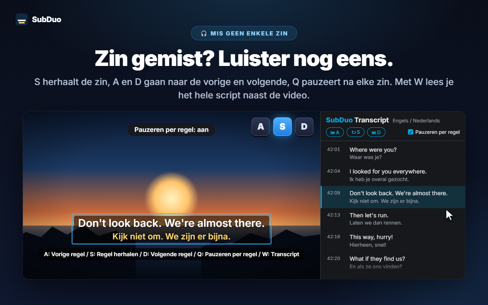
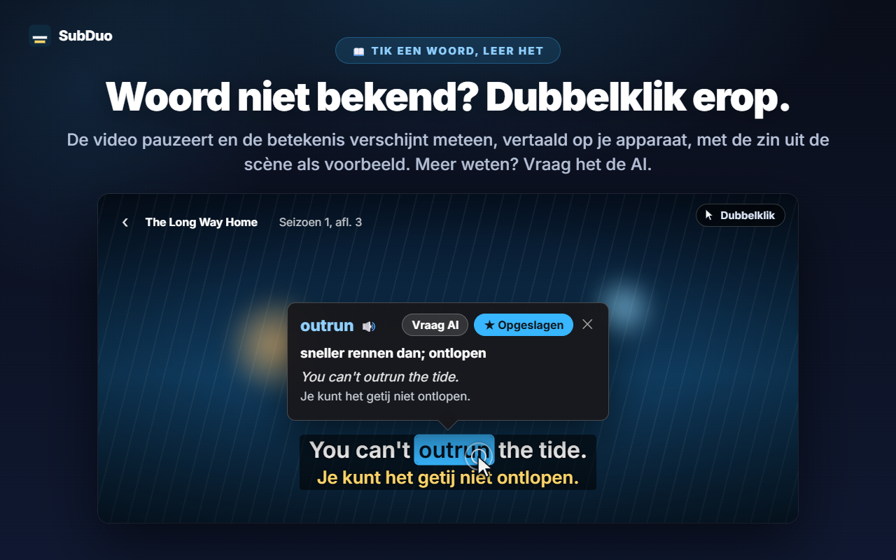
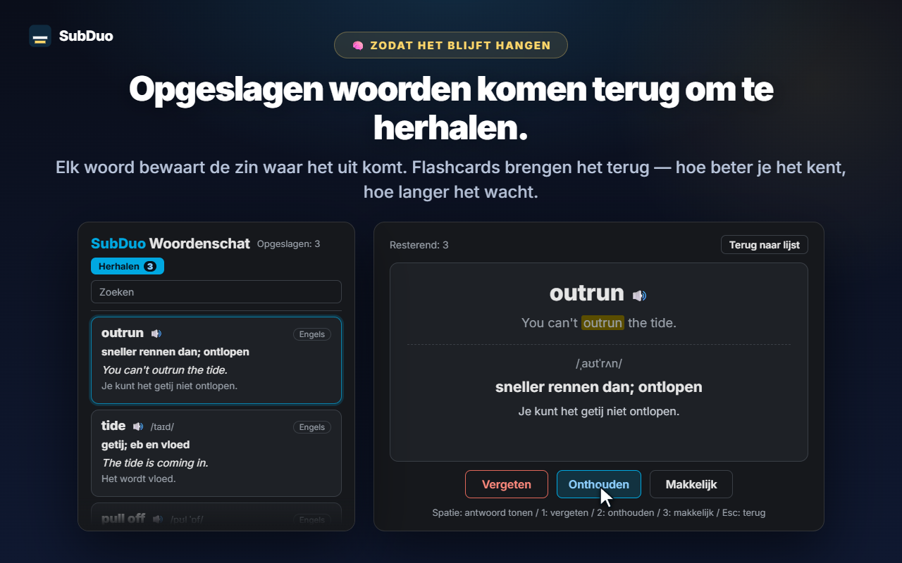

Twee ondertiteltalen naar keuze
Elk spoor dat de site aanbiedt, wordt herkend zodra de video speelt, ook de automatisch gegenereerde ondertitels van YouTube. Kies er één per regel of verberg een regel.
SubDuo toont twee ondertiteltalen tegelijk: het origineel boven, jouw taal eronder. Dubbelklik op een woord om te zien wat het betekent, herhaal een zin met één toets en bewaar wat je leert in een ingebouwde woordenlijst.
Gebruikt de ondertitels die elke site al aanbiedt · Geen account · Ondertitels blijven in je browser
Streamingspelers tonen één ondertiteltaal tegelijk. SubDuo voegt er een tweede aan toe — plus de tools om ervan te leren.
Schermen uit de extensie, getoond in jouw taal.

Kies twee van de ondertitelsporen die de titel aanbiedt: het origineel boven, jouw taal eronder. Sleep de ondertitels waar je maar wilt, scrol boven een regel om de grootte te wijzigen en klik met rechts om kleur, transparantie of vervaging aan te passen.

Druk op S om de regel te herhalen, op A en D om terug of vooruit te gaan, en op Q om na elke regel automatisch te pauzeren. Druk op W om het transcript te openen in het zijpaneel van Chrome — beide talen, regel voor regel — en klik op een rij om erheen te springen.

De video pauzeert en een kaart toont meteen de betekenis, op je apparaat vertaald door de ingebouwde vertaler van Chrome, met de zin uit de scène als voorbeeld. Met Alt+slepen selecteer je een woordgroep. Tik op ‘Vraag AI’ voor de betekenis in context, de uitspraak en een voorbeeldzin.

Elk opgeslagen woord bewaart de zin waar het vandaan komt. Doorzoek en filter je woordenlijst, speel de uitspraak af en herhaal met oefenkaarten: hoe beter je een woord kent, hoe langer het duurt voordat het terugkomt.
Geen account, geen instelschermen. Installeren en op play drukken.
Installeer SubDuo via de Chrome Web Store en speel een video af op Prime Video, YouTube, Netflix, Disney+ of TED.
Klik op het SubDuo-pictogram en kies een ondertiteltaal voor de bovenste en een voor de onderste regel. Alleen sporen die de titel aanbiedt, staan in de lijst.
Dubbelklik op woorden om ze op te zoeken, druk op A, S of D om zinnen te herhalen en open je woordenlijst via de pop-up.
Gemaakt voor wie leert door te kijken — met ondertitels die niet in de weg zitten tot je ze nodig hebt.
Elk spoor dat de site aanbiedt, wordt herkend zodra de video speelt, ook de automatisch gegenereerde ondertitels van YouTube. Kies er één per regel of verberg een regel.
Dubbelklik of Alt+klik op een woord, of Alt+sleep over een woordgroep. Het afspelen pauzeert en de vertaling verschijnt op de video, gemaakt op je apparaat.
De betekenis in context, de uitspraak en een voorbeeldzin, in je weergavetaal. Tot 20 keer uitleg per dag, gratis.
Sla woorden op met één klik, zoek ze terug, filter op taal en beluister ze met 🔊. Oefenkaarten laten woorden die je al kent minder vaak terugkomen.
A voor de vorige regel, S om te herhalen, D voor de volgende. Q pauzeert na elke regel. Vervaag één regel om jezelf te testen en wijs ernaar om te controleren.
Elke regel in beide talen naast de video. De huidige regel is gemarkeerd; klik op een rij om erheen te springen. Druk op W om het te openen.
Sleep om te verplaatsen, scrol om een regel groter of kleiner te maken, gebruik de pijltjestoetsen voor fijnafstelling en lijn links, in het midden of rechts uit. Klik met rechts voor kleur, transparantie en vervaging per regel.
Grote ondertitels op YouTube, subtiele op Netflix: instellingen worden per site bewaard en via je Chrome gesynchroniseerd.
Menu's, vertalingen en AI-uitleg gebruiken de weergavetaal die je kiest, en die mag anders zijn dan de taal van Chrome.
SubDuo leest de ondertitelbestanden die elke site al naar je browser stuurt en tekent ze daar. Het enige wat het verstuurt, is een woordgroep waarover je zelf AI om uitleg vraagt, samen met de ondertitelregel.
Ondertitels worden in je browser verwerkt en getekend. Je instellingen, woordenlijst en kijkgeschiedenis worden niet naar de ontwikkelaar gestuurd. Woordvertalingen gebeuren op je apparaat met de ingebouwde vertaler van Chrome.
Als je op ‘Vraag AI’ tikt, gaan de geselecteerde woordgroep, de ondertitelregel en de andere regel op het scherm, de taalcodes en een willekeurige apparaat-ID (voor de daglimiet) naar de SubDuo-server, die OpenAI om de uitleg vraagt. Je IP-adres wordt verwerkt om de dienst te laten werken.
Je hoeft je nergens voor aan te melden. De extensie bevat geen advertenties en geen analytics.
‘storage’ voor instellingen en woordenlijst, ‘scripting’ om open tabbladen na updates opnieuw te verbinden, ‘sidePanel’ voor het transcript, en alleen toegang tot de vijf ondersteunde sites.
In een paar seconden geïnstalleerd via de Chrome Web Store